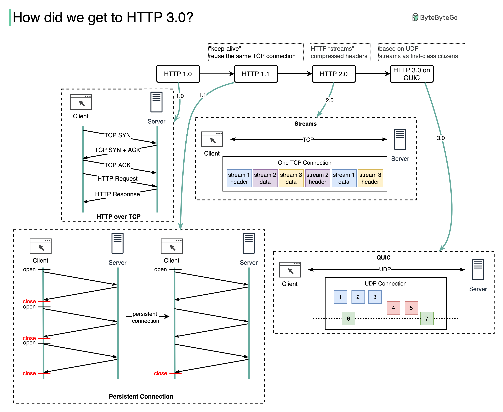

HTTP
HTTP(HyperText Transfer Protocol) — протокол прикладного уровня; аналогичными ему являются FTP и SMTP. Обмен сообщениями идёт по схеме «запрос-ответ». Для идентификации ресурсов HTTP использует глобальные URI. В отличие от многих других протоколов, HTTP не сохраняет своего состояния. Это означает отсутствие сохранения промежуточного состояния между парами «запрос-ответ». Компоненты, использующие HTTP, могут самостоятельно осуществлять сохранение информации о состоянии, связанной с последними запросами и ответами (например, «куки» на стороне клиента, «сессии» на стороне сервера).
API многих программных продуктов также подразумевает использование HTTP для передачи данных — сами данные при этом могут иметь любой формат, например, XML или JSON.
Структура HTTP запроса
HTTP запрос состоит из трех основных частей, которые идут в нем именно в том порядке, который указан ниже. Между заголовками и телом сообщения находится пустая строка (в качестве разделителя), она представляет собой символ перевода строки.
-
Строка запроса – указывает метод передачи, URI к которому нужно обратиться и версию протокола HTTP, пример:
GET / HTTP/1.1 -
Заголовки – описывают тело сообщений, передают различные параметры и др. сведения и информацию.
-
Пустая строка (разделитель)
-
Тело сообщения — это сами данные, которые передаются в запросе. Тело сообщения – это необязательный параметр и может отсутствовать.
POST /cgi-bin/process.cgi HTTP/1.1
User-Agent: Mozilla/4.0 (compatible; MSIE5.01; Windows NT)
Host: www.example.com
Content-Type: application/x-www-form-urlencoded
Content-Length: length
Accept-Language: ru-ru
Accept-Encoding: gzip, deflate
Connection: Keep-Alive
licenseID=string&content=string&/paramsXML=string
Структура HTTP ответа
HTTP/Версия Код состояния Пояснение
Код состояния (Status Code) — три цифры (первая из которых указывает на класс состояния), которые определяют результат совершения запроса. Например, в случае, если был использован метод GET, и сервер предоставляет ресурс с указанным идентификатором, то такое состояние задаётся с помощью кода 200. Если сервер сообщает о том, что такого ресурса не существует — 404. Если сервер сообщает о том, что не может предоставить доступ к данному ресурсу по причине отсутствия необходимых привилегий у клиента, то используется код 403. Спецификация HTTP 1.1 определяет 40 различных кодов HTTP, а также допускается расширение протокола и использование дополнительных кодов состояний.
Пояснение к коду состояния (Reason Phrase) — текстовое (но не включающее символы CR и LF) пояснение к коду ответа, предназначено для упрощения чтения ответа человеком. Пояснение может не учитываться клиентским программным обеспечением, а также может отличаться от стандартного в некоторых реализациях серверного ПО.
После стартовой строки следуют заголовки, а также тело ответа. Например:
HTTP/1.1 200 OK
Server: nginx/1.2.1
Date: Sat, 08 Mar 2014 22:53:46 GMT
Content-Type: application/octet-stream
Content-Length: 7
Last-Modified: Sat, 08 Mar 2014 22:53:30 GMT
Connection: keep-alive
Accept-Ranges: bytes
Wisdom
Тело ответа следует через два переноса строки после последнего заголовка. Для определения окончания тела ответа используется значение заголовка Content-Length (в данном случае ответ содержит 7 восьмеричных байтов: слово «Wisdom» и символ переноса строки).
HTTP методы
Http Метод представляет собой последовательность из любых символов, кроме управляющих и разделителей, и определяет операцию, которую нужно осуществить с указанным ресурсом.
OPTIONS
Используется для определения возможностей веб-сервера или параметров соединения для конкретного ресурса. В ответ серверу следует включить заголовок Allow со списком поддерживаемых методов. Также в заголовке ответа может включаться информация о поддерживаемых расширениях.
Предполагается, что запрос клиента может содержать тело сообщения для указания интересующих его сведений. Формат тела и порядок работы с ним в настоящий момент не определён; сервер пока должен его игнорировать. Аналогичная ситуация и с телом в ответе сервера.
Для того чтобы узнать возможности всего сервера, клиент должен указать в URI звёздочку — «*». Запросы «OPTIONS * HTTP/1.1» могут также применяться для проверки работоспособности сервера (аналогично пингованию) и тестирования на предмет поддержки сервером протокола HTTP версии 1.1.
Результат выполнения этого метода не кэшируется.
GET
Используется для запроса содержимого указанного ресурса. С помощью метода GET можно также начать какой-либо процесс. В этом случае в тело ответного сообщения следует включить информацию о ходе выполнения процесса.
Клиент может передавать параметры выполнения запроса в URI целевого ресурса после символа «?»:
GET /path/resource?param1=value1¶m2=value2 HTTP/1.1
Согласно стандарту HTTP, запросы типа GET считаются идемпотентными
Кроме обычного метода GET, различают ещё
- Условный
GET— содержит заголовкиIf-Modified-Since,If-Match,If-Rangeи подобные; - Частичный
GET— содержит в запросеRange.
Порядок выполнения подобных запросов определён стандартами отдельно.
HEAD
Аналогичен методу GET, за исключением того, что в ответе сервера отсутствует тело. Запрос HEAD обычно применяется для извлечения метаданных, проверки наличия ресурса (валидация URL) и чтобы узнать, не изменился ли он с момента последнего обращения.
Заголовки ответа могут кэшироваться. При несовпадении метаданных ресурса с соответствующей информацией в кэше — копия ресурса помечается как устаревшая.
POST
Применяется для передачи пользовательских данных заданному ресурсу. Например, в блогах посетители обычно могут вводить свои комментарии к записям в HTML-форму, после чего они передаются серверу методом POST и он помещает их на страницу. При этом передаваемые данные (в примере с блогами — текст комментария) включаются в тело запроса. Аналогично с помощью метода POST обычно загружаются файлы на сервер.
В отличие от метода GET, метод POST не считается идемпотентным[4], то есть многократное повторение одних и тех же запросов POST может возвращать разные результаты (например, после каждой отправки комментария будет появляться очередная копия этого комментария).
При результате выполнения 200 (Ok) в тело ответа следует включить сообщение об итоге выполнения запроса. Если был создан ресурс, то серверу следует вернуть ответ 201 (Created) с указанием URI нового ресурса в заголовке Location.
Сообщение ответа сервера на выполнение метода POST не кэшируется.
PUT
Применяется для загрузки содержимого запроса на указанный в запросе URI. Если по заданному URI не существует ресурс, то сервер создаёт его и возвращает статус 201 (Created). Если же был изменён ресурс, то сервер возвращает 200 (Ok) или 204 (No Content). Сервер не должен игнорировать некорректные заголовки Content-*, передаваемые клиентом вместе с сообщением. Если какой-то из этих заголовков не может быть распознан или не допустим при текущих условиях, то необходимо вернуть код ошибки 501 (Not Implemented).
Фундаментальное различие методов POST и PUT заключается в понимании предназначений URI ресурсов. Метод POST предполагает, что по указанному URI будет производиться обработка передаваемого клиентом содержимого. Используя PUT, клиент предполагает, что загружаемое содержимое соответствует находящемуся по данному URI ресурсу.
Сообщения ответов сервера на метод PUT не кэшируются.
PATCH
Аналогично PUT, но применяется только к фрагменту ресурса.
DELETE
Удаляет указанный ресурс.
TRACE
Возвращает полученный запрос так, что клиент может увидеть, какую информацию промежуточные серверы добавляют или изменяют в запросе.
CONNECT
Преобразует соединение запроса в прозрачный TCP/IP-туннель, обычно, чтобы содействовать установлению защищённого SSL-соединения через нешифрованный прокси.
Коды состояний
Используются для определения состояния запроса, разделены на 5 групп. Каждая группа имеет собственный «общий смысл»:
- 1xx — информационные. Они описывают процесс передачи.
- 2xx — успешные. Эти говорят нам об успешной передаче.
- 3xx — перенаправленные. Эти же сигнализируют о перенаправлении запроса.
- 4xx — ошибка клиента. Ошибки в запросе, синтаксисе, хосте обращения и т.д.
- 5xx — ошибка сервера. Ошибки в выполнении запроса, связанные с сервером.
Примеры:
- 200 ОК — означает что всё в порядке, запрос обработан и дан ответ.
- 301 Moved Permanently — означает что нужный документ перенесён на другой URI. Новый адрес указывается в заголовке Location.
- 302 Found(v1.1), Moved Temporarily(v1.0) — указывает на то, что нужный документ временно перенесён на другой URI, который находится в заголовке Location.
- 400 Bad Request — означает что в запросе допущена синтаксическая ошибка.
- 401 Unauthorized — означает что для доступа нужно пройти аутентификацию.
- 403 Forbidden — не хватает прав доступа для выполнения запроса.
- 404 Not Found — сервер не может найти запрошенный URI.
- 500 Internal Server Error — любая ошибка сервера, если она не подходит под любой другой код ответа.
Основные HTTP заголовки
Общие
- Cache-Control — параметры управления кэшированием.
- Connection — информация о соединении.
- Date — дата создания сообщения.
- Pragma — специфические опции для выполнения.
- Transfer-Encoding — перечень кодировок, применённых для формирования сообщения.
- Upgrade — перечень протоколов, с которыми может работать клиент. Сервер указывает один.
- Via — история прохождения запроса через прокси сервера, с указанием версии протокола.
Запроса
- Accept — перечень форматов, с которыми работает ресурс. Остальные игнорируются.
- Accept-Charset — список кодировок с которыми может работать клиент.
- Accept-Encoding — список кодировок, применяемых при кодировании сущности при передаче.
- Accept-Language — перечень языков, с которыми может работать клиент.
- Cookie - передает на сервер все свои куки
- Host — указание доменного имени и порта хоста для запрашиваемого ресурса. Нужно для работы виртуальных хостингов.
- Max-Forwards — указывает предельное кол-во переходов по Proxy серверам.
- Referer — указывает URI ресурса, с которого клиент сделал запрос.
- User-Agent — перечень названий и версий компонентов системы клиента.
Ответа
- Location — указывает URI ресурса или URI, на который нужно перейти.
- Public — перечисляет доступные методы, подобно Allow, но для всего сервера.
- Server — перечень названий и версий ПО на сервере, для прокси это поле Via.
- Set-Cookie — устанавливает cookie для клиента
Сущности
-
Content-Encoding — указывает способ кодирования сущности.
-
Content-Language — язык содержимого.
-
Content-Length — размер сообщения выраженный в октетах.
-
Content-Location — резервное расположение сущности.
-
Content-Disposition — В обычном HTTP-ответе заголовок
**Content-Disposition**является индикатором того, что ожидаемый контент ответа будет отображаться в браузере, как вэб-страница или часть вэб-страницы, или же как вложение, которое затем может быть скачано и сохранено локально.В случае, если тело HTTP-запроса типа
multipart/form-data, то общий заголовок Content-Disposition используется для каждой из составных частей multipart тела для указания дополнительных сведений по полю, к которому применён заголовок. Каждая часть отделена с помощью границы (boundary), определённой в заголовкеContent-Type.Content-Disposition,используемый непосредственно для всего тела HTTP-запроса, ни на что не влияет. -
Content-MD5 — MD5-хэш для проверки целостности полученных данных.
-
Content-Type — способ и формат отображения сущности.
-
Link — ссылка на связанный с сущностью ресурс.
-
Title — заголовок сущности.
-
Allow — перечень методов, поддерживаемых именно этим ресурсом(ток для ответа)
Дополнительно:
Cookie
Ку́ки — небольшой фрагмент данных, отправленный веб-сервером и хранимый на компьютере пользователя. Веб-клиент (обычно веб-браузер) всякий раз при попытке открыть страницу соответствующего сайта пересылает этот фрагмент данных веб-серверу в составе HTTP-запроса. Применяется для сохранения данных на стороне пользователя, на практике обычно используется для:
- аутентификации пользователя;
- хранения персональных предпочтений и настроек пользователя;
- отслеживания состояния сеанса[en] доступа пользователя;
- ведения статистики о пользователях.
Установка куки
Запрашивая страницу, браузер отправляет веб-серверу короткий текст с HTTP-запросом. Например, для доступа к странице http://www.example.org/index.html, браузер отправляет на сервер www.example.org обычный запрос. На который сервер отвечает, отправляя запрашиваемую страницу вместе с текстом, содержащим HTTP-ответ. Там может содержаться указание браузеру сохранить куки:
HTTP/1.1 200 OK
Content-type: text/html
Set-Cookie: name=value
Строка Set-cookie отправляется лишь тогда, когда сервер желает, чтобы браузер сохранил куки. В этом случае, если куки поддерживаются браузером и их приём включён, браузер запоминает строку name=value (имя = значение) и отправляет её обратно серверу с каждым последующим запросом. Например, при запросе следующей страницы http://www.example.org/spec.html браузер пошлёт серверу www.example.org следующий запрос:
GET /spec.html HTTP/1.1
Host: www.example.org
Cookie: name=value
Accept: */*
HTTPS
HTTPS (HyperText Transfer Protocol Secure) — расширение протокола HTTP, поддерживающее шифрование. Данные, передаваемые по протоколу HTTPS, «упаковываются» в криптографический протокол SSL или TLS. В отличие от HTTP, для HTTPS по умолчанию используется TCP-порт 443.
HTTPS не является отдельным протоколом. Это обычный HTTP, работающий через шифрованные транспортные механизмы TLS. Он обеспечивает защиту от атак, основанных на прослушивании сетевого соединения — от снифферских атак и атак типа man-in-the-middle, при условии, что будут использоваться шифрующие средства и сертификат сервера проверен и ему доверяют.
Новшества разных версий HTTP
HTTP 1.1
Новым в этой версии был режим «постоянного соединения»(keep-alive): TCP-соединение может оставаться открытым после отправки ответа на запрос, что позволяет посылать несколько запросов за одно соединение. Клиент теперь обязан посылать информацию об имени хоста(Host заголовок), к которому он обращается, что сделало возможной более простую организацию виртуального хостинга.
Достоинства:
- Ниже загрузка ЦПУ и расход памяти (потому как открывается меньше соединений одновременно).
- Можно использовать HTTP pipelining (конвейерную обработку) запросов и ответов.
- Снижает вероятность перегрузки сети (меньше TCP соединений).
- Уменьшает лаги для последующих запросов (не нужно заново устанавливать TCP соединение).
- Ошибки HTTP возвращаются без закрытия соединения — клиенты могут пробовать новые команды, и, если они не поддерживаются сервером, послать повторный запрос в том же соединении, используя старую семантику.
Эти достоинства особенно проявляются для защищённых HTTPS соединений, потому что создание защищённого соединения требует больше процессорного времени и сетевого обмена между клиентом и сервером.
HTTP 2
- бинарный, сжатие заголовков;
- мультиплексирование данных;
- приоритизация;
- возможна отмена загрузки;
- server push
Вторая крупная версия сетевого протокола HTTP, используемая для доступа к World Wide Web. Протокол основан на SPDY.
В отличие от текстового HTTP 1.1, HTTP/2 — бинарный. Поэтому протокол более эффективен при парсинге, более компактный при передаче, подвержен меньшему количеству ошибок.
В HTTP 1.1 браузеры используют множественные подключения к серверу для загрузки веб-страницы, причем количество таких соединений ограничено. Но это не решает проблему с блокированием канала медленными пакетами. Тогда как в HTTP/2 используется мультиплексирование, которое позволяет браузеру использовать одно соединение TCP для всех запросов. Все файлы подгружаются параллельно. Запросы и ответы разделяются по фреймам с мета-данными, которые ассоциируют запросы и ответы. Так что они не перекрывают друг-друга и не вызывают путаницы. При этом ответы получаются по мере их готовности, следовательно, тяжелые запросы не будут блокировать обработку и выдачу более простых объектов.
HTTP 1.1 offers different workarounds for latency issues, including pipelining and the Keep-Alive header. However, pipelining was never widely implemented and the Keep-Alive header suffered from head-of-line blocking: the current request must complete before the next one can be sent.
In HTTP/2, multiple asset requests can reuse a single TCP connection. Unlike HTTP 1.1 requests that use the Keep-Alive header, the requests and response binary frames in HTTP/2 are interleaved and head-of-line blocking does not happen. The cost of establishing a connection (the well-known “three-way handshake”) has to happen only once per host. Multiplexing is especially beneficial for secure connections because of the performance cost involved with multiple TLS negotiations.
Вместе с мультиплексированием появилась приоритезация трафика. Запросам можно назначить приоритет на основе важности и зависимости. Так что при загрузке веб-страницы браузер будет в первую очередь получать важные данные, CSS-код, к примеру, а все второстепенное обработается в последнюю очередь.
Протокол HTTP построен таким образом, что при отправке запросов также передаются заголовки, которые содержат дополнительную информацию. Сервер, в свою очередь, также прикрепляет заголовки к ответам. А учитывая, что веб-страницы состоят из множества файлов, все заголовки могут занимать приличный объем. Поэтому в HTTP/2 присутствует сжатие заголовков, которое позволит существенно сократить объем вспомогательной информации, так что браузер сможет отправить все запросы сразу.
При использовании протокола HTTP 1.1 браузер запрашивает страницу, сервер отправляет в ответ HTML и ждет, пока браузер его обработает и запросит все необходимые файлы: JavaScript, CSS и фото. Поэтому в новый протокол внедрили интересную функцию под названием Server Push. Она позволяет серверу сразу же, не дожидаясь ответа веб-браузера, добавить нужные по его мнению файлы в кэш для быстрой выдачи.
HTTP3
Протокол QUIC с 2013 года развивает Google в качестве альтернативы TCP+TLS. Главным преимуществом является снижение задержек при потере пакетов и уменьшение времени установки и согласования соединений. Технически QUIC представляет собой надстройку над протоколом UDP. QUIC поддерживает мультиплексирование нескольких соединений, а также методы шифрования, аналогичные TLS/SSL.
-
уровень безопасности, сравнимый с TLS;
-
контроль целостности потока с помощью прямой коррекции ошибок, предотвращающей потерю пакетов;
-
почти мгновенное установление соединения и возможность сразу после отправки пакета подключения передавать данные, а также минимизация задержки между отправкой запроса и получением ответа;
-
наличие идентификатора соединения UUID позволит сократить время на переподключение к сетям для перемещающихся мобильных клиентов;
-
избавление от таймаутов за счёт отказа от того же номера последовательности при повторной передаче пакетов;
-
разделение на потоки, при котором потеря пакета влияет только на свой поток;
-
новая система коррекции ошибок на основе кодов;
-
выравнивание криптографических границ блоков с границами пакетов QUIC, что снижает влияние потери пакетов на декодирование;
-
отсутствие проблем с блокировкой очереди TCP;
-
система прогнозирования пропускной способности в каждом направлении, что позволяет уменьшить вероятность возникновения перегрузки. Как следствие — рост производительности и пропускной способности, по сравнению с TCP. В частности, для YouTube это позволило снизить повторную буферизацию на 30 %.

Дополнительно:
- Простым языком об HTTP
- HTTP: протокол, который каждый разработчик должен знать (часть 1)
- HTTP: протокол, который каждый разработчик должен знать (часть 2)
- https://developer.mozilla.org/ru/docs/Web/HTTP/Overview
- http2
- Оптимизация в HTTP/2
- Как HTTP/2 сделает веб быстрее
- http://portscan.ru/article-protocol-http.html